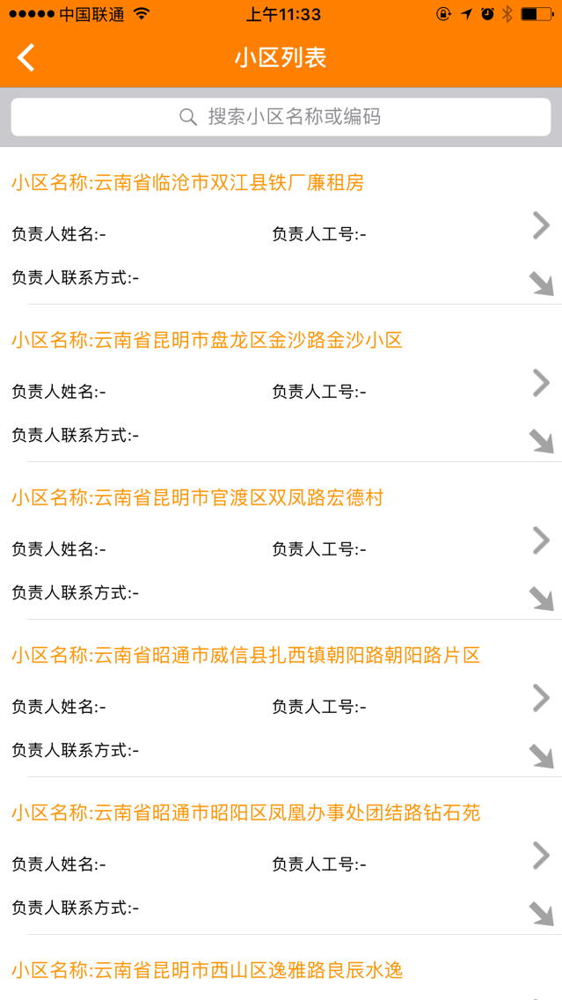
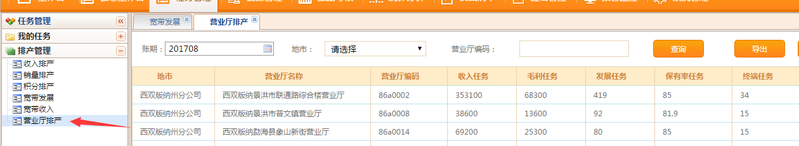
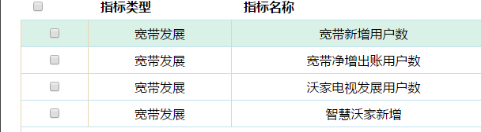
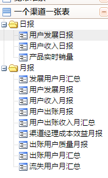
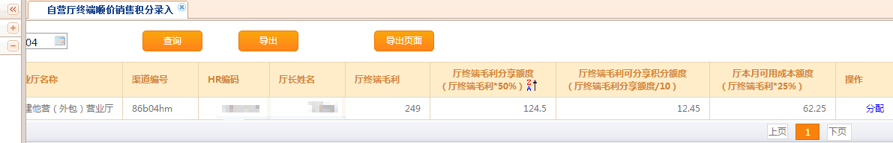

基层责任单元系统2017年主要新增功能点
（以下内容不含纯报表开发需求）
佣金积分新规则或调整........{p}
为适应渠道经理日常工作以非室内工作为主的工作需要，便于渠道经理外出工作时调用相关渠道经营情况，以及对工作情况的及时填报和处理。同时让上级管理部门及时掌握渠道经理外出情况，开展渠道经理销售工作指导；结合WEB客户端的易用性和易操作性以及手机客户端的便捷性，渠道巡检任务下发在云南联通基层责任单元服务支撑系统WEB端实现，渠道巡检任务执行（实际签到）在手机客户端渠道一点通实现。其中渠道巡检分日常巡检和活动巡检和信息收集任务。
渠道日常巡检：对象为营服中心负责人和渠道经理，涉及渠道营服中心负责人和渠道经理所辖社会实体渠道。
活动巡检：对象为全体联通员工，涉及渠道 联通全渠道。
信息收集：对象为全体联通员工，收集内容：营销活动、佣金政策、产品信息。
任务列表

统计报表


由地市人员或营服总将小区


数据获取：从原有的导入改为从经分库获取2I2C数据；
数据分配
1.客户经理的添加与删除，对归属在支撑系统中互联网运营中心内的员工，管理员可选择添加到分配人名单中，也可将所在分配名单中的客户经理进行删除。
2.数据分配可选择自动平均分配所选客户经理，同时增加手工设置分配人员、分配数量功能，便于数据分配调整。
3.数据二次分配功能，选择所需删除的客户经理，将该工号下的数据进行分配，分配时，可识别已完成（已激活、已首充），未完成（未激活、已激活未首充）；对已完成的数据不进行二次分配，保留原工号名下，对未完成数据按条件（未激活、未首充）分别进行平均分配所选客户经理。
4、数据筛选、排序功能：客户经理可以所属数据按未激活、未首充来筛选所需外呼数据，筛选完后再按表头内容进行排序（例如：套餐、商品名、年龄、性别、外呼情况等表头内容排序）方便外呼时区分套餐、年龄等重要信息。
预警功能
1.未激活预警：对于超长时间未激活数据，增加功能设置，可选择大于15天、10天….仍未激活用户的筛选，由客户经理进行跟进回访。
2.余额不足、半停、全停预警：当用户余额小于XX元（可选择）、半停或全停，由客户经理进行跟进回访。
外呼记录添加
1.客户经理可对所属数据，根据外呼用户的情况进行填写；项目有：外呼情况（下拉选项：未接通-无人接听；未接通-无法接通；未接通-欠费停机；未接通-拒访；未接通-空号或销户；已接通-同意激活；已接通-同意充值；已接通-不想激活；已接通-不想充值；已接通-只想体验；已接通-网络信号差，不想继续使用）；外呼时间（系统默认填写时间）；备注（由客户经理自行手工录入所需备注的内容）。
2.多次外呼记录系统仅识别最后一次变更记录，原始回访记录保留最近一次外呼时间及结果。
统计报表功能
1.管理员可对已分配数据的总数据、激活率、首充率等内容的更新情况进行报表查看（例：客户经理张三，截止2017年4月20日，累计分配未激活总数为1000户，激活400户，激活率40%，累计分配未首充总数为1000户，已首充500户，首充率50%，累计充值金额30000元等内容），同时也可调取某一名或多名客户经理的情况进行查看对比；客户经理工号可查看自己的报表统计。
2．外呼情况统计：管理员可对当天全部或某一个客户经理的外呼完成情况进行统计报表查看（例：客户经理李四，当天外呼接触量为110户，已接通60户，未接通50户，外呼成功率45%，未接通-无人接听14户；未接通-无法接通15户；未接通-拒访10户；；未接通-欠停4户；未接通-空号7户）；客户经理工号可查看自己的外呼报表统计。
3．统计报表均支持导出功能。
针对营业厅的发展、收入、保有率、毛利、终端销量指标进行任务下发，地市到厅级；


从各个维度实现了州市、营业厅、营业人员的效益评价体系、KPI考核体系。
目前实现13个分类模块，各个模块基本涵盖所有的维度、指标；
主要针对厅级的收入、发展、毛利、保有率、4G渗透率、终端、渠道偏好、用户质量、受理量、效能分析等指标展开分析展现；

主要功能：
1、BSS时实将宽带预存款余额低于30元的用户清单同步至基层经营单元系统。
2、基层经营单元系统将任务推送至用户对应的渠道经理和代理商，并支撑渠道经理和代理商导出对应的用户清单。
3、报表“省市公司报表、渠道经理报表、代理商报表”及短信提醒推送。
4、考核报表“连续三个月续费率排名后三分公司“、”连续三个月续费率排名后三渠道经理”、连续三个月续费率排后三代理商。
5、状态为监控停机用户，放到公共池，全渠道代理商可见。
短信实例：
云南省分公司:
牋牋牋牋牋您好！你公司”上月出账用户中宽带预存款余额0-30元“用户续费情况如下：
1.当月累计用户数47495户，已续费6684户，续费率14.07%.续费率排名前三分公司：玉溪市分公司:续费率24.57%、曲靖市分公司:续费率23.54%、西双版纳州分公司:续费率21.79%;续费率排名后三分公司：普洱市分公司:续费率7.87%、昆明市分公司:续费率8.26%、德宏州分公司:续费率8.28%。
2.当年累计宽带预存款余额≤30元用户数86777户，已续费26930户，续费率31.03%.续费率排名前三分公司：玉溪市分公司:续费率49.98%、红河州分公司:续费率41.93%、西双版纳州分公司:续费率41.52%;续费率排名后三分公司：昆明市分公司:续费率18.77%、普洱市分公司:续费率18.81%、德宏州分公司:续费率22.47%。
3.监控停机，公共池全渠道公开待续费用户11548户


关于与森锐合作加快小微网点拓展和产效提升相关政策的通知云南联通实体渠道函〔2017〕71号
关于自营厅终端顺价销售积分系统配置和积分二次分配需求
关于调整承诺低消送业务佣金及积分规则的需求PWHQSFXXH201770008756
协助支撑昆明市分公司关于公众直销渠道达量奖励佣金规则的申请PWHQSFXXH201780009040
关于设置手厅推广积分的工单PWHQSFXXH201750005863
2I2C积分开户，配送，首充积分
"关于2017年7月7日前通过基层系统支撑（针对七彩蓝尊厂商型渠道活动及七彩蓝尊沃享4G自备机活动）
不给予分等分级补贴奖励的需求（昆明分公司）20170703PWHQSFXXH201770007737"
调减0元宽带的分等分级积分PWHQSFXXH201760007427
特申请调减69融合产品（产品ID3001902)中0元宽带的分等分级积分规则
昆明2017年春季校园专属政策的需求PWHQSFXXH201760006634
协助配置OPPO R11产品活动积分PWHQSFXXH201760007066
关于开展深圳优易金融分期合约产品营销的通知云南联通实体渠道函〔2017〕55号
关于配置“二季度短期促销”相关活动自有渠道积分的需求PWHQSFXXH201740003965
关于协助（网格化系统）配置昆明校园佣金规则及既往出账收入网维佣金进行补结算的需求PWHQSFXXH201740004749
2017年春季校园营销活动2月入网用户专项渠道补贴
昆明市分公司关于社会渠道69卡专属佣金政策的需求PWHQSFXXH201740004934
关于新增WO+视频流量包业务办理佣金及积分的需求函PWHQSFXXH201740003961
为进一步利用“一厅一商”模式，有效盘活第三方终端资源，推进营业厅全品类终端供应，提升营业厅终端零售能力及效率
一、新增用户角色
1.系统新增“代理商终端管理员”角色
2. “代理商终端管理员”角色功能：代理商终端信息管理：终端入库、调库、出库等管理。
3.系统操作要求：本角色维护信息，需要通过地市地市供应商审核员进行审核后，操作才能生效。
二、增加“一厅多商”功能
在现有一厅一商的基础上，增加一厅多商功能，一个营业厅可以对应多个供应商进行终端供货，确保多供应商产品销售。
三、增加非终端品类功能
1.增加非终端品类：增加智能设备（包括且不仅限于智能家居、智能电视、智能手环、智能手表等）入库、出库、移库、销售等功能。
2.非终端品类不进行串号管理，通过录入商品编码作为唯一商品标识，录入商品编码进行销售，录入界面不限制商品编码位数（商品编码随后核实提供编码规则）。
1、针对代理商（代理商平台侧展现）、渠道经理、区县负责人、州市、省分五个层级的角色进行展现。具体表样见附件。
2、需要在WEB版和APP版实现展现，且根据角色所在层级不同展示不同报表式样；
3、WEB版需具备明细数据导出功能，导出表样见附件表格
4、APP相关报表纵列展示字段可进行选择定制
代理商




Created with the Personal Edition of HelpNDoc: Full-featured Kindle eBooks generator